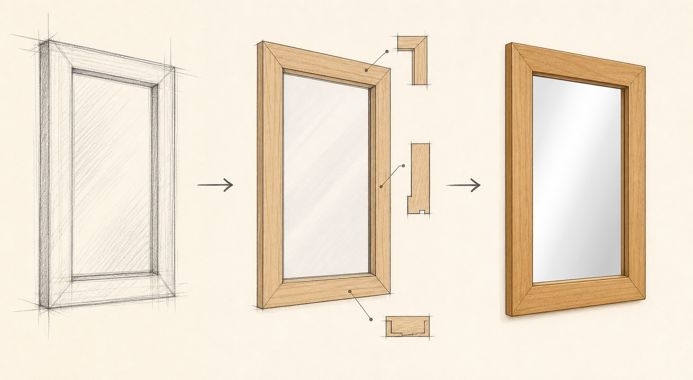

Key Idea
Design choices should be explained, not just decorated.
A strong mirror design considers size, timber choice, edge profile, joint method, finish, hanging method, available tools and the target user.
Theory Topic
Briefs, constraints, sketches, user needs and project decisions.
Module presentation
Use the presentation to preview Design Process before working through the theory, videos, checks and written evidence.
Theory Block 7
A design is more than a nice sketch. It explains what the project is for, who it is for and how it will be made.
Design choices should be explained, not just decorated.
A strong mirror design considers size, timber choice, edge profile, joint method, finish, hanging method, available tools and the target user.
The portfolio needs to show thinking, not just a finished object. Good design notes explain why choices were made and how problems changed the plan.
The design process starts with a brief, then moves through sketches, material choices, construction decisions and changes made during production. A strong mirror design is not judged only by how decorative it is. It must suit the user, fit within the time available, use safe workshop processes and be realistic for the timber and tools available.
Design development
Sketching is not about making pretty pictures. It is a way to test the mirror's proportion, frame detail, timber choice and practical construction before cutting begins.

| Decision | What A Strong Student Explains |
|---|---|
| Frame size | How the size suits the user, mirror glass, timber lengths and wall or room location. |
| Joint choice | Why the joint gives enough strength and accuracy for a rectangular frame. |
| Edge profile | How a chamfer, round-over or square edge affects appearance, comfort and finishing. |
| Finish | How the finish protects the timber, suits the look, and can be applied safely. |
A constraint is a limit or condition that affects a design. A good idea for the mirror must still work with the supplied glass, approved drawings, available timber, workshop tools, safety requirements and the time available.
| Constraint | What it affects |
|---|---|
| Project drawing | Required construction, frame details and fitting method. |
| Mirror glass | Frame opening, rebate and safe support method. |
| Available timber | Section size, grain appearance, defects and sensible use of material. |
| Workshop tools | Which joints, profiles and processes can be completed safely. |
| Time and skill | How complex a feature can be while still being finished accurately. |
Feedback is evidence, not a reason to bin the whole idea. Record the suggestion, explain the change you made, and state why the revised choice is more suitable. If a change is made during production, photograph it or add a short portfolio note so the decision can be evaluated later.
My mirror is designed for... The main constraint was... I chose this joint because... I changed my design when... This gives students a way in without turning the page into waffle soup.
Answer the Quick Check, then return to the theory menu when you are ready for another topic.